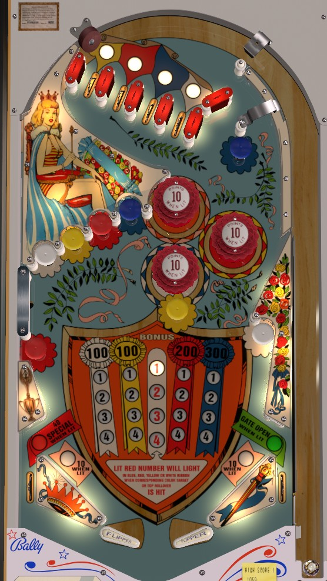

At the start of each ball, the Selector column of inserts in the center of the table will have one number lit, and the four Ribbons on either side are completely empty. There are 4 top lanes and 8 mushroom bumpers around the game: 1 lane and 2 mushrooms in each of white, yellow, red, and blue. Making a top lane or hitting a mushroom bumper scores 20 points and lights the lit Selector number in whichever Ribbon column corresponds to the colour of the top lane or mushroom bumper that was made. When the 20 points is done scoring, the selected number will increase by 1, cycling back to 1 when it is advanced past 4.
Lighting a pair of 1s, 2s, or 3s across the yellow and red ribbons opens the gate in the right out lane, which redirects the ball back to the shooter lane for a replunge. Lighting both the yellow and red 4s lights the Special in the left out lane, which scores one free game.
Lighting all of 1-2-3-4 on a single ribbon awards the prize shown at the head of that ribbon: 100 points for white or yellow, 200 points for red, and 300 points for blue. Collecting a prize unlights all 1-2-3-4 numbers that have been collected on all ribbons, including closing the right out lane gate or unlighting the left out lane Special if they have been qualified.
After a lane or mushroom bumper is made, it takes the game a little more than half a second to score the 20 points and advance the selected number. If you hit another mushroom bumper during this time, you can collect the same number across multiple colours before the selected number has time to advance, but you won't get the 20 points for 'sneaking in' extra targets that way.
Pop bumpers and slingshots score 1 point, or 10 when lit. The bumpers and slings turn themselves on and off seemingly randomly as other switches are hit around the game. This game likely uses a dynamic difficulty system similar to many other Bally games of the mid-1960s, which causes these "randomly" lit features to be lit less frequently if the game has recently given out a lot of free credits.
There are no in lanes. Flippers back up directly to the slingshots, which are quite shallow in angle, being barely steeper than the angle of a lowered flipper. In addition to potentially being lit for Special (left) or having an open free-ball gate (right), the out lanes score 40 points. There is no extra ball feature. I believe that a tilt ends the game, but only for the player who tilted.
The below picture of Blue Ribbon's playfield was taken from the VPX recreation by JPSalas.
